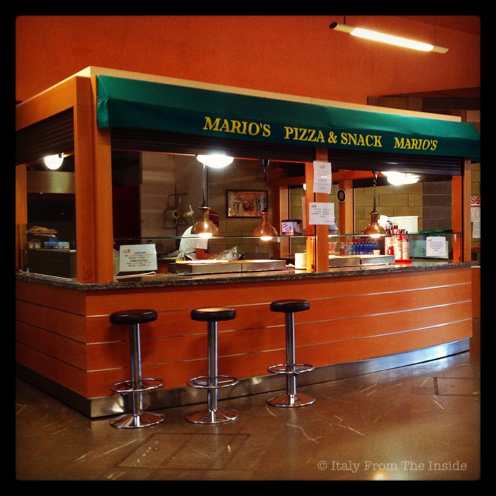

I'm back from Italy. Actually, I have been back for a while, but now with the kids in school I can say that I'm officially back to normal. The photo above is one of the memories I've taken with me from my "vacation" in Italy this past July. I say "vacation" because my month there has actually been a going back and forth to and from the hospital where my Mom was recovering after she underwent a surgery she had to have to fix a broken femur (she fell 3 days before my arrival and was released from the hospital 3 days before my departure, how about that?). Since the visiting hours went from 12.30pm to 3pm, every time I entered into the lobby I was wrapped by the smell of freshly baked pizza, straight from the oven. A pizzeria in the hospital. Non male, non male.